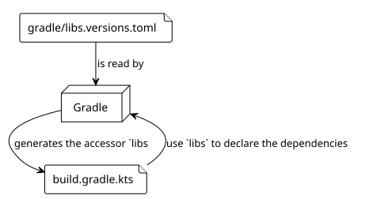
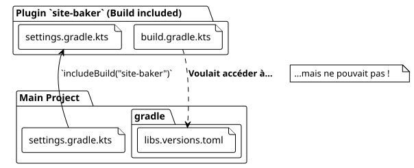

Article 5: The Adventure of the Shared libs.versions.toml
Published on 27 September 2025
Introduction
In our quest to create the`site-baker`plugin, we sought to maintain a clean and centralized codebase. One of the best practices in the modern Gradle ecosystem is the use of theversion catalog(libs.versions.toml) to manage dependencies. But what happens when your project becomes more complex, such as acomposite buildwhere an independent build (our plugin) must be included in another?
That is where our adventure took an unexpected turn. We wanted our`site-baker`plugin, which is itself a Gradle project, to use the same version catalog as our main project. This article, the fifth in our series, tells the story of how we solved this challenge.
1. The Version Catalog (libs.versions.toml): A Reminder
The`gradle/libs.versions.toml`file is a Gradle feature that allows you to centralize the versions and coordinates of your project’s dependencies. It is generally structured into four sections:
-
[versions]: Defines aliases for version numbers (e.g.,kotlin = "1.9.20"). -
[libraries]: Defines aliases for complete dependencies, using the versions defined above (e.g.,kotlin-stdlib = { module = "org.jetbrains.kotlin:kotlin-stdlib", version.ref = "kotlin" }). -
[bundles]: Groups several libraries under a single alias (e.g.,jackson = ["jackson-core", "jackson-databind"]). -
[plugins]: Defines aliases for Gradle plugins.
Once defined, Gradle automatically generates typed accessors, which makes your`build.gradle.kts`much more readable:
dependencies {
// Au lieu de : implementation("org.jetbrains.kotlin:kotlin-stdlib:1.9.20")
implementation(libs.kotlin.stdlib)
}
2. The Problem: A Composite Build and Two Separate Worlds
Our project structure is acomposite build. The main project (thymeleaf.cheroliv.com) includes the plugin project (site-baker) via the`includeBuild("site-baker")`command in the`settings.gradle.kts`file.

The problem is that, by default, an included build is aseparate world. It has its own configuration, its own lifecycle, and it does not see the`libs.versions.toml`file of the main build. Our`plugin/build.gradle.kts`was trying to use`libs.plugins.kotlin.jvm`, but the`libs`object was not generated from the correct TOML file, causing build errors.
3. The Solution: Sharing Dependency Resolution
After several searches, the solution turned out to be a Gradle feature designed precisely for this case:`dependencyResolutionManagement`.
In the`settings.gradle.kts` du included buildfile (site-baker/settings.gradle.kts), we can tell Gradle where to find the version catalog to use.
Here is the configuration we added to`site-baker/settings.gradle.kts`:
// site-baker/settings.gradle.kts
dependencyResolutionManagement {
repositoriesMode.set(RepositoriesMode.FAIL_ON_PROJECT_REPOS)
repositories {
gradlePluginPortal()
mavenCentral()
}
versionCatalogs {
create("libs") {
from(files("../gradle/libs.versions.toml"))
}
}
}
rootProject.name = "site-baker"
include("plugin")Let’s analyze the crucial part:
versionCatalogs {
create("libs") { // Crée un catalogue nommé 'libs'
from(files("../gradle/libs.versions.toml")) // En utilisant ce fichier
}
}-
create("libs"): We declare a version catalog that will be accessible via the`libs`alias. -
from(files("../gradle/libs.versions.toml")): This is the magic. We tell Gradle that the source of this catalog is the TOML file located in the`gradle` du parent projectdirectory (../).
With this configuration, the`site-baker`build now knows that it must use the version catalog of the main project. The`libs`object is generated correctly, and dependencies are resolved as expected.
4. Conclusion: The Power of Well-Managed Composite Builds
This experience was rich in lessons. The version catalog is a fantastic tool for maintainability, but its behavior in composite build scenarios is not always intuitive.
The key is to remember that an included build remains an independent build. To share configurations like the version catalog, you must use the explicit mechanisms provided by Gradle, such as the`dependencyResolutionManagement`block in`settings.gradle.kts`.
By resolving this problem, we not only made our build cleaner, but we also strengthened the consistency of our project by ensuring that the plugin and the main project share a single source of truth for their dependencies.
In the next article, we will continue to enrich our plugin by adding more complex tasks, now that our dependency management is solid and centralized.